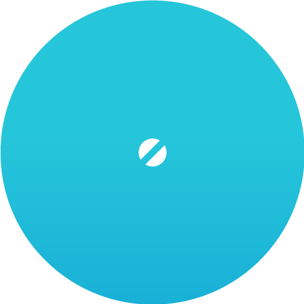

<div class="full-height" layout="column" layout-fill="" layout-align="space-around center" md-theme="{{triSkin.elements.content}}" theme-background="primary:hue-3"><div layout="row" flex="" class="full-width" layout-align="center center"><div flex="50" flex-sm="90" layout="row"><div flex=""></div><div flex=""></div><div flex=""></div></div></div><div layout="row" flex="" class="full-width" layout-align="center center"><md-card flex="50" flex-sm="90"><md-card-content class="text-center"><h1 class="md-display-1">{{'Упс! Страница не найдена ' | translate}}</h1><p>{{ 'Требуемая страница не найдена, возможно, указан неверный адрес'| translate}}</p><md-button class="md-primary md-raised" ng-click="goHome()">{{'Перейти на главную' | translate}}</md-button></md-card-content></md-card></div></div>